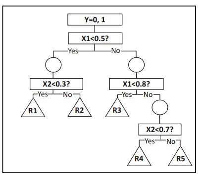
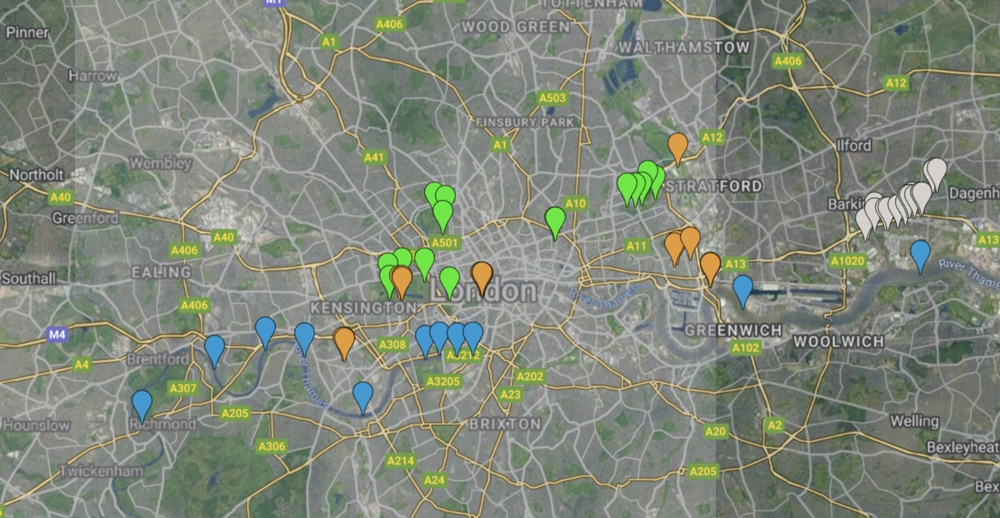
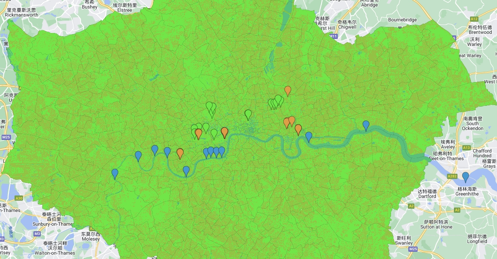
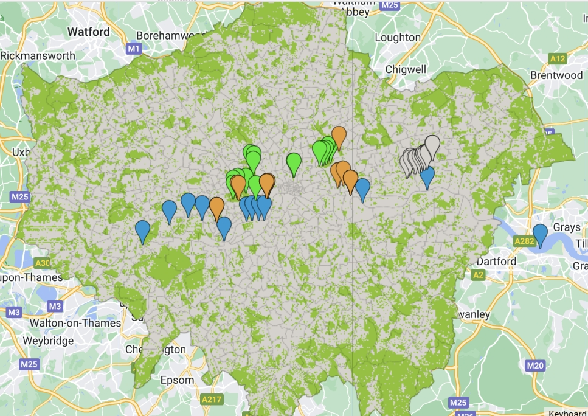
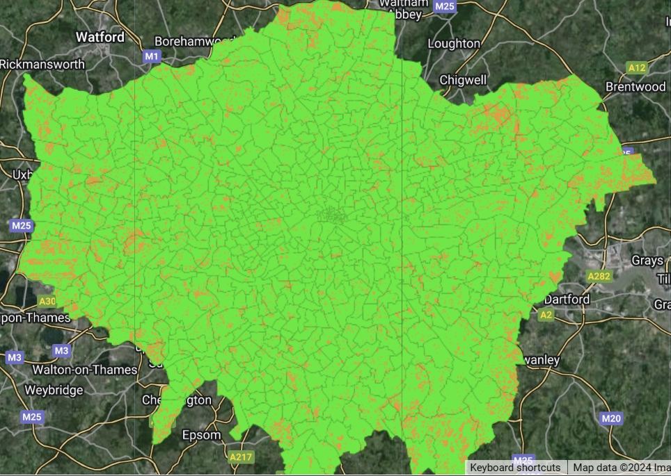

Week7 - Classification I
Machine learning, a subset of computer science, involves creating algorithms that allow computers to learn and make decisions or predictions autonomously, related to human learning and generalization through experience, embodying inductive learning principles (Jordan and Mitchell 2015). When the topic comes the spatial analysis, good attempts like Support Vector Machine and random forest has been applied in this filed.
Algorithms
In the middle of many classification algorithms, decision trees have proven to be efficient algorithms for classification of large datasets. A decision tree is a classification algorithm that automatically derives a hierarchy of partition rules with respect to a target attribute of a large dataset (Li and Claramunt 2006). Forest is build from single tree. Classification aims to Classify data into discrete categories based on certain features.

Three types of nodes exist: The root node, or decision node, which divides records into exclusive subsets, another internal nodes, or chance nodes, indicating available choices and linking parent and child nodes, and the leaf nodes, or end nodes, signifying the outcome of decisions. To avoid overfit, decision trees require stopping rules Li and Claramunt (2006), such as minimum records in a leaf or node before splitting, and maximum leaf depth from the root.
Random Forests improve decision tree accuracy by generating multiple trees through random samples and feature subsets, thus enhancing diversity and reducing overfitting. This method involves creating a forest where each tree contributes to the final prediction through majority voting, while unselected data offers an unbiased error estimate. The ensemble approach allows trees to fully grow without pruning, and the number of features evaluated at each split is often the square root of the total features, further ensuring robust predictions.
Support Vector Machine (SVM) is a machine learning tool for categorizing data by drawing an optimal separating line (or higher-dimensional plane) to distinguish different data points. It aims for the widest margin between the nearest points of any category, known as support vectors. SVM’s effectiveness is fine-tuned using two parameters: C, which controls the margin’s strictness and focus on difficult points, and Gamma, which dictates the influence of each data point, with higher values emphasizing closer points. For data not linearly separable, SVM employs the kernel trick to manipulate the data into a separable form.
Coding with GEE
This practice employs GEE for land classification by first filtering, clipping, and reducing the image, then adding point-based feature collections representing different land types to the satellite map.

The second step involves using CART for training and classification. After separately classifying soil and buildings, subtract the two images to identify potential unused land areas.
 
The unused land in London appears minimal, indicating a well-developed area.

The final image encapsulates the outcome of the analysis, presenting a comprehensive map that clearly contrasts the unused land in London. The brown patches represent potential undeveloped land surrounded by a sea of green, which indicates well-utilized space. Overall, the process through GEE is really helpful for handling remote sensing data in geo field.
Application
The method provided by Yan-yan SONG and Ying LU(Song and Ying 2015) segments a population into branches forming an inverted tree, comprising a root, internal, and leaf nodes. It’s a non-parametric algorithm, effectively handling large, complex datasets without requiring a complex parametric framework. When combine the population into the spatial analysis, here is an example. LandScan USA(Bhaduri et al. 2007) offers high-resolution population distribution data essential for socio-environmental research, public health, homeland security, and policy-making. This data supports operational activities, scientific analyses, and studies on population dynamics over time and space. It’s data is pivotal for identifying vulnerable groups like the elderly or low-income communities, guiding targeted policy development. Additionally, it serves emergency management and homeland security by offering detailed population distribution insights, enhancing disaster response and resource planning. Applying classification in these areas accelerates target group identification and reduces budget requirements.
Reflection
It is evident that Google Earth Engine (GEE) offers a robust platform for geographical data analysis and land classification. The integration of GEE for categorizing land into specific features such as rivers, parks, soil, and buildings, and its subsequent application for identifying potential unused land in urban areas, as demonstrated in London, showcases the dynamic capabilities of GEE.
The methodology employed leverages the Classification and Regression Trees (CART) for training and classification purposes, ensuring a detailed, systematic approach to land assessment. The practice of subtracting the classified images of soil and buildings to extract information about unused land areas reflects an innovative approach to urban planning and land management.
However, the analysis reveals that unused land in London is scarce, underscoring the city’s extensive development. This observation could have significant implications for urban policy and development strategies, as it highlights the limited scope for expansion and the potential need for creative land use planning. It suggests that future urban development may need to focus on vertical expansion or redevelopment of existing areas rather than horizontal sprawl, which is often less sustainable.
Moreover, the use of GEE for such analyses provides an educational insight into the potential of machine learning and big data in enhancing my understanding of urban landscapes. By using zonal statistics, regional and neighborhood reduction techniques, and regression models, GEE allows for a comprehensive evaluation of land utilization, which is critical for sustainable urban planning.
The practical provides a learning opportunity to delve deeper into the spatial and spectral intricacies of our world, enabling the development of more informed, data-driven decisions in urban and environmental planning.